CLAUDE.md는 매번 통째로 비용이 들어요
홀먼이 강연에서 CLAUDE.md를 평가한 슬라이드는 세 문장뿐이에요. 첫 줄은 '매 턴, 전부 비용을 낸다. 지금 작업과 무관한 90%까지'예요. 둘째 줄은 플러그인 1,000개가 저마다 CLAUDE.md를 들고 오면 상자 안에 파일이 1,000개가 된다는 지적이에요. 마지막 줄은 빨간 글씨로 '규모가 커지면 버티지 못한다, 정말 어디에나 적용되는 몇 줄에만 괜찮다'고 정리해요.

홀먼은 클로드 코드의 플러그인과 에이전트 팀 설계를 이끈 엔지니어예요. 그런데 자기가 만든 플러그인에 CLAUDE.md 기능을 일부러 넣지 않았어요. 플러그인 문서의 파란 형광펜 부분이 그 내용이에요. 플러그인 폴더 맨 위에 CLAUDE.md를 둬도 클로드 코드는 읽지 않고, 지시를 담고 싶으면 스킬로 쓰라고 해요. 바로 아래에는 '보호된 파일 수정 막기'처럼 늘 지켜야 하는 규칙은 훅으로 넣으라는 문장도 보여요.
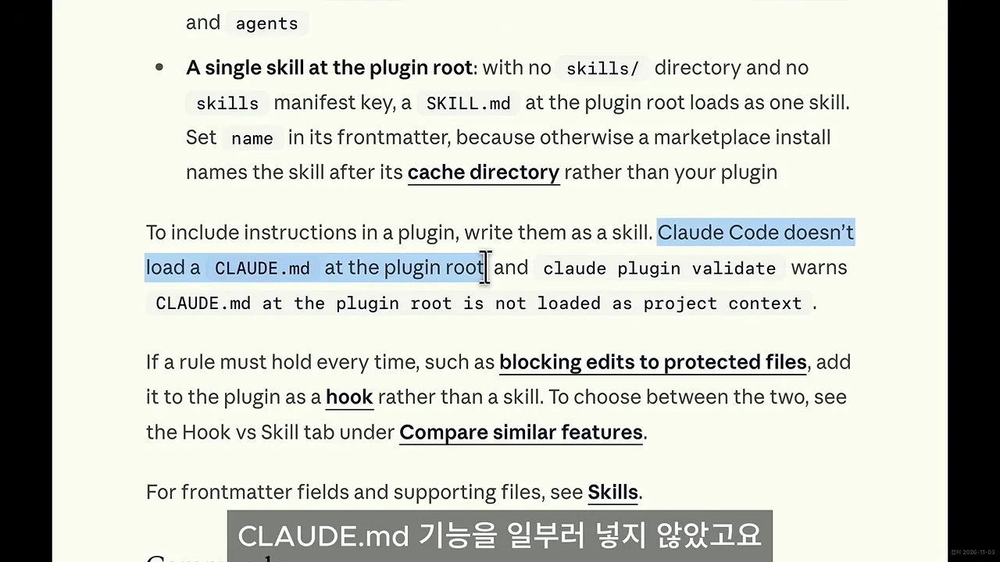
클로드 코드 공식 문서도 같은 방향이에요. 'Size' 항목에 형광펜이 칠해진 부분을 보면, CLAUDE.md 파일 하나는 200줄 아래로 두라고 해요. 길어질수록 컨텍스트를 더 먹고 규칙 준수도(adherence)가 떨어진다는 이유예요. 그런데 실제로는 많은 사람이 반대로, 모든 규칙을 CLAUDE.md 하나에 몰아 써요.
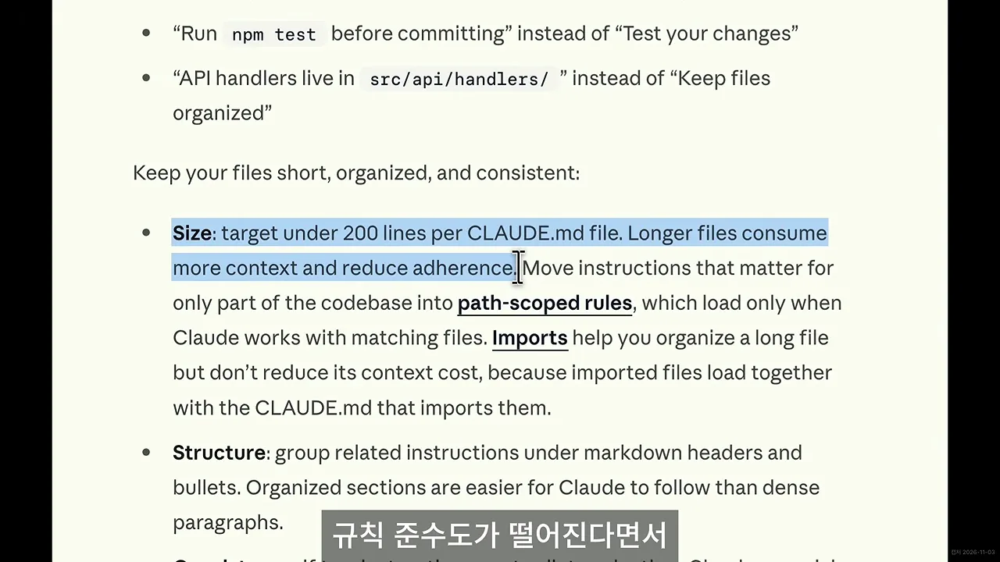
컨텍스트 윈도우를 언제, 얼마나 차지하나요?
홀먼의 하네스를 이해하려면 컨텍스트 윈도우부터 봐야 해요. 공식 문서의 시각화 화면은 사용자가 첫 메시지를 치기 전에 무엇이 이미 올라가 있는지 보여 줘요. 위에서부터 시스템 프롬프트(+4.2K), 자동 메모리, 환경 정보, MCP(Model Context Protocol) 도구, 스킬 설명(+450), 전역 CLAUDE.md(+320), 그리고 맨 아래 프로젝트 CLAUDE.md(+1.8K)예요. 시스템 프롬프트 다음으로 큰 덩어리가 프로젝트 CLAUDE.md예요.

홀먼은 하네스 장치를 '컨텍스트 윈도우를 언제, 얼마나 차지하느냐'로 골랐어요. 그 기준으로 고른 순서가 훅, 스킬, 서브에이전트예요. 아래 그림은 영상이 설명한 네 가지 장치가 컨텍스트를 차지하는 방식을 나란히 놓은 거예요.
서브에이전트 쪽 시각화도 화면에 나와요. SUBAGENT'S SEPARATE CONTEXT WINDOW 아래에 서브에이전트가 읽은 파일들(session.ts, timeouts.ts, config/*.ts)이 쌓여 있어요. 하단 문구는 9.9K 토큰이 서브에이전트 쪽에 남고 요약만 돌아온다고 적어요. 메인 대화로 돌아오는 건 맨 아래 'Subagent returns summary' 한 줄(+420)뿐이에요.

적어 둔 규칙이 왜 안 지켜질까요? 답은 훅
발표자도 처음 클로드 코드를 쓸 때 CLAUDE.md에 규칙을 정말 많이 적었다고 해요. 그런데 결과물을 보면 클로드 코드는 그 규칙을 무시하고 코드를 썼어요. 이유는 두 가지예요. 하나는 앞에서 본 대로 길수록 준수도가 떨어진다는 것이에요. 다른 하나는 CLAUDE.md에 강제력이 없다는 거예요. 작업할 때 참고해 달라고 부탁하는 문서일 뿐이에요.
공식 문서의 '메모리 문제 해결' 항목이 그 근거예요. Claude isn't following my CLAUDE.md 제목 아래, 형광펜이 칠해진 'no guarantee of strict compliance'가 보여요. CLAUDE.md는 시스템 프롬프트가 아니라 사용자 메시지로 전달되고, 클로드는 읽고 따르려고 하지만 엄격하게 지킨다는 보장은 없다는 설명이에요.

규칙을 어긴 순간 빨간 밑줄
그래서 홀먼은 클로드 코드가 규칙을 어긴 바로 그 순간에 알려 주는 장치를 넣어요. 문서 편집기에서 맞춤법이 틀리면 바로 빨간 밑줄이 생기는 것과 같은 원리예요. 슬라이드 제목도 'Red squiggles for agents', 에이전트를 위한 빨간 밑줄이에요. 첫 줄은 코드 리뷰가 아니라 실수한 순간에 찔러 주라는 말이에요. 둘째 줄은 PostToolUse 훅으로 바뀐 부분을 린트하고 경고를 컨텍스트에 되돌려 넣으라는 말이에요.
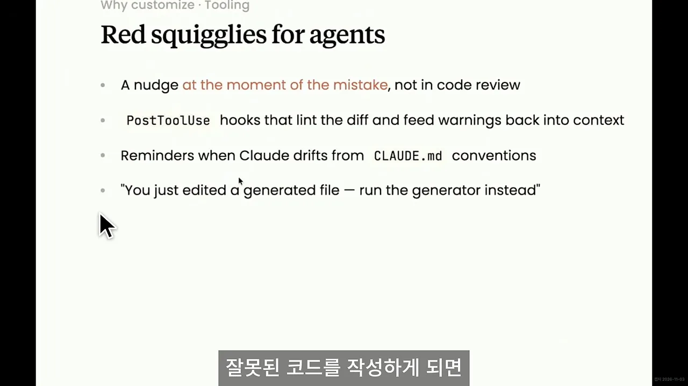
앞선 슬라이드가 구체적인 모습을 보여 줘요. 위쪽 회색 칸은 에이전트가 방금 쓴 코드로, backoffMs 아래에 빨간 물결선이 있고 오른쪽에 '그런 변수는 없다'는 메모가 붙어 있어요. 아래 빨간 테두리 칸이 PostToolUse 훅이 컨텍스트로 돌려보낸 메시지예요. 'retry.ts 41번째 줄, backoffMs를 찾을 수 없다. config.backoffMs를 말한 거냐'는 내용이에요.
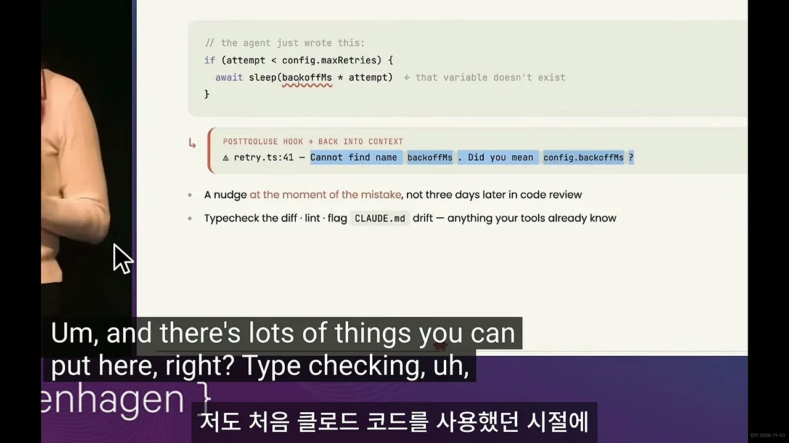
훅 자체는 셸 스크립트일 뿐이에요. 'Hooks are just shell scripts' 슬라이드에는 settings.json에 PostToolUse 훅을 거는 예시가 있어요. 파일을 고치는 도구(Edit|Write)가 실행되면 ./lint-changed.sh를 돌리라는 설정이에요. 아래에는 훅을 걸 수 있는 시점인 PreToolUse, PostToolUse, UserPromptSubmit, Stop이 나열돼 있어요.

되돌릴 수 없는 일은 실행 직전에 막기
홀먼은 강연에서 훅을 쓴다고만 했지 실제로 어떤 규칙에 쓰는지는 말하지 않았어요. 그래서 발표자가 자기 사례를 보여 줘요. 한 번 일어나면 되돌리기 어려운 일, 예를 들어 비밀 키가 노출되거나 복구할 수 없는 삭제를 하려는 순간을 훅으로 실행 직전에 막아요. 설정 화면을 보면 PreToolUse 훅의 matcher에 Bash|Write|Edit|MultiEdit와 데이터베이스 관련 도구가 걸려 있고, 실행할 명령은 .claude/hooks/guard.sh예요.
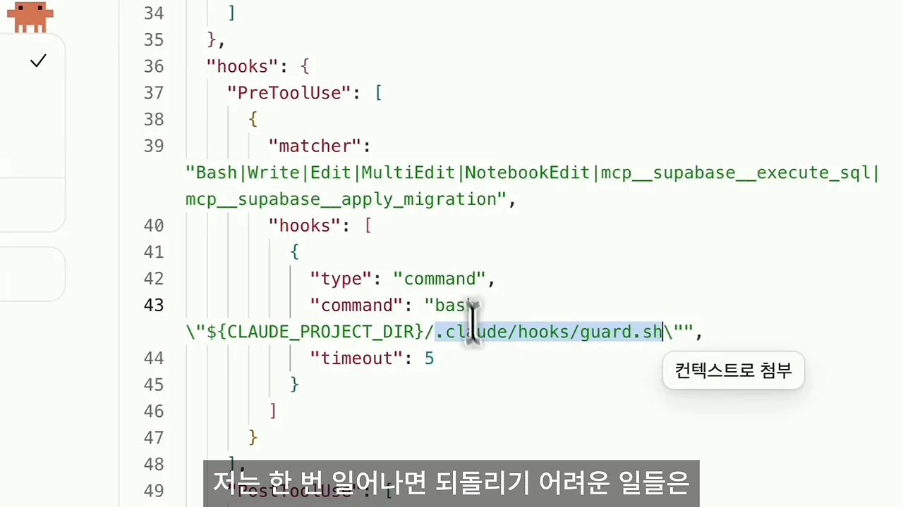
guard.sh가 먼저 검사해요. 영상 03:55에서 보기그 훅이 실제로 작동한 화면이에요. 구독 관리 서비스를 만드는 중에 클로드 코드가 fixture-demo.ts에 export const SECRET_KEY = …를 쓰려다 실패했어요. 빨간 글씨가 훅이 돌려준 메시지예요. 시크릿 키의 실제 값을 파일에 직접 쓰고 있으니, 접두어 없는 이름으로 .env 파일에 두고 서버에서 읽으라는 안내예요. 아래 문단에서 클로드 코드는 파일을 만들지 못했다고 보고하고, 우회하지 않겠다고 답해요.
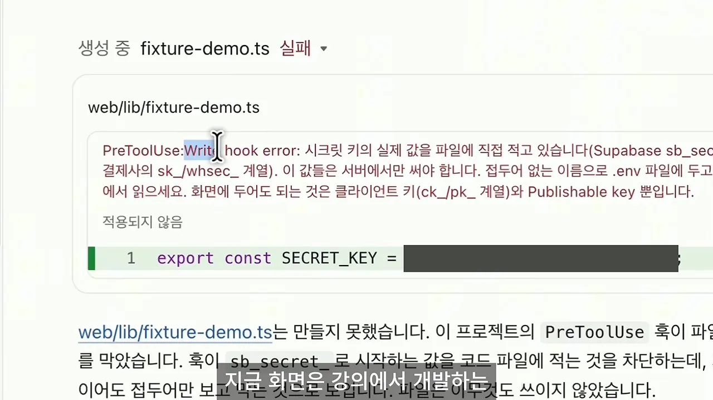
같은 장치를 만들고 싶다면 직접 스크립트를 짤 필요는 없어요. 클로드 코드에게 "훅을 이용해서 위험한 작업 실행 직전에 막는 장치를 설계해 줘"라고 부탁하면 돼요.
절차는 스킬로, 결과만 받을 일은 서브에이전트로
늘 쓰는 규칙이 아니면 스킬로
스킬은 이미 많이들 쓰지만, 발표자가 짚는 건 하나예요. 프로젝트 전반에서 항상 쓰는 규칙 말고는 전부 스킬로 빼라는 거예요. 홀먼은 스킬을 '언제 읽어야 하는지 짧은 요약이 붙은 CLAUDE.md'라고 설명해요. 평소에는 요약만 컨텍스트에 있다가, 그 절차가 정말 필요할 때 본문 전체를 불러와요.
공식 스킬 문서의 둘째 문단이 이걸 그대로 말해요. 같은 지시나 체크리스트, 여러 단계 절차를 대화에 계속 붙여 넣게 되거나, CLAUDE.md의 한 부분이 '사실'이 아니라 '절차'로 커졌다면 스킬을 만들 때라고 해요. 그리고 CLAUDE.md와 달리 스킬 본문은 쓸 때만 불러오니, 긴 참고 자료도 필요해지기 전까지는 비용이 거의 안 든다고 적어요.
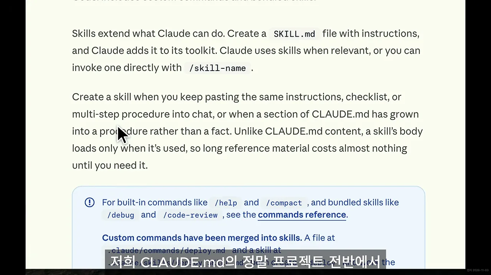
CLAUDE.md가 200줄을 넘는다면 클로드 코드에게 항상 필요한 규칙 말고는 전부 스킬로 빼 달라고 하면 돼요. 발표자는 자기 서비스의 CLAUDE.md를 wc -l로 세어 344줄이 나온 화면도 보여 줘요.
결과만 필요한 일은 서브에이전트로
서브에이전트는 클로드 코드가 알아서 부를 때도 있지만, 필요할 때 의도적으로 쓰면 더 좋아요. 서브에이전트는 메인 세션의 컨텍스트 윈도우에 포함되지 않고 그 밖에서 돌아요. 홀먼도 '스킬은 컨텍스트 안에서, 서브에이전트는 컨텍스트 밖에서 돈다'고 정리해요. 공식 문서 화면에서 형광펜이 칠해진 'Each subagent runs in its own context window'가 그 뜻이에요.
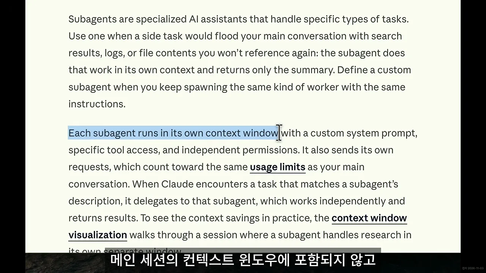
검색 결과나 로그처럼 과정에서 잔뜩 쌓이는 데이터보다 결과가 더 중요한 일을 맡기면 돼요. 서브에이전트가 별도 창에서 처리하고 결과만 요약해 가져오니, 메인 대화에는 그 요약만 남아요.
작업 공간마다 오래 머무는 에이전트
홀먼은 여기서 한 발 더 나가요. 일을 마치면 사라지는 서브에이전트와 달리, 작업 공간마다 오래 머무는 에이전트를 둬요. 'My actual setup' 슬라이드의 폴더 트리가 그 모습이에요. claude-code-1/, claude-code-4/처럼 같은 저장소를 여러 벌 펼친 워크트리마다 옆에 브랜치 이름과 메모가 붙어 있어요. daisy/ndc-talk/slides 옆에는 '이 강연!'이라는 메모가 있고, 회색 줄에는 '16 permanent worktrees'라고 적혀 있어요.
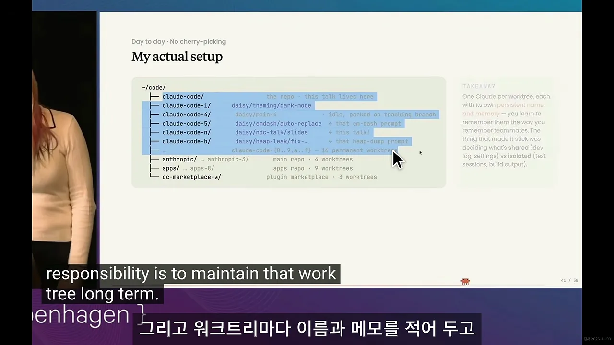
홀먼은 이 에이전트들을 팀원처럼 기억한다고 해요. 그중 하나가 이 강연 슬라이드를 맡은 에이전트였어요. 다음 슬라이드 'Pick up your session from anywhere'는 세션이 자기 컴퓨터에서 계속 돌고, 웹이나 모바일 앱은 그 세션을 들여다보는 창일 뿐이라고 적어요. 홀먼은 호텔에서 걸어오면서 휴대폰으로 그 에이전트와 대화해 발표 일부를 썼다고 해요.
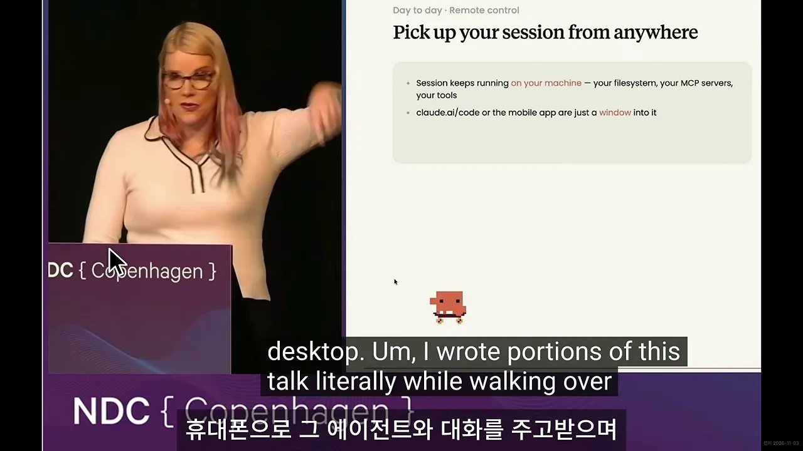
하네스 재설계 정리와 /doctor
정리하면 CLAUDE.md에 잔뜩 쌓인 규칙을 성격에 따라 나눠 옮기면 돼요. 엄밀하게 지켜야 하는 규칙은 훅으로, 특정 시점에 쓰는 절차나 방법은 스킬로 옮겨요. 결과만 받아 보면 되는 작업은 서브에이전트에게 맡겨요. 어디에도 둘 필요 없는 규칙, 최근 한 달 동안 필요 없었던 규칙은 지워요.
| CLAUDE.md에 있던 것 | 옮길 곳 | 왜 거기로 가나요 |
|---|---|---|
| 엄밀하게 지켜져야 하는 규칙 | 훅 | 어기는 순간 시스템이 막거나 바로 알려 줘요 |
| 특정 시점에 쓰는 절차나 방법 | 스킬 | 평소엔 짧은 설명만, 필요할 때 본문을 불러와요 |
| 결과만 받아 보면 되는 작업 | 서브에이전트 | 별도 창에서 처리하고 요약만 돌려줘요 |
| 어디에도 둘 필요 없는 규칙, 한 달 동안 안 쓴 규칙 | 삭제 | 매 대화 비용만 들어요 |
| 모든 작업에 공통인 규칙 | CLAUDE.md에 몇 줄 | 홀먼이 CLAUDE.md에 맞다고 본 유일한 경우예요 |
발표자의 연습용 프로젝트 .claude 폴더가 그렇게 나눈 결과예요. hooks/ 아래에 check-test-coverage.sh와 guard.sh 두 개, skills/ 아래에 architecture, conventions, database, design-system, review, testing 같은 스킬 폴더가 있어요.
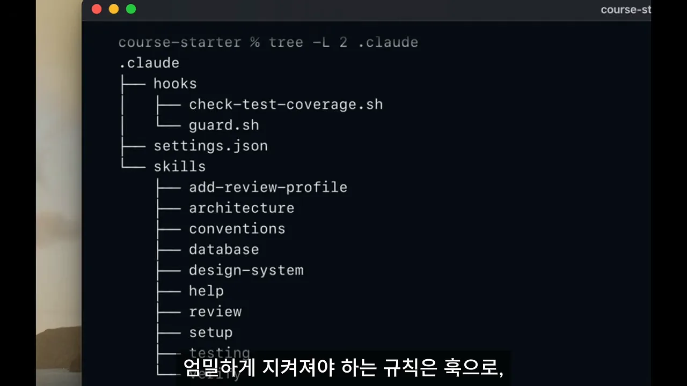
지울 후보는 /doctor로
지울 규칙을 직접 하나씩 볼 필요는 없어요. 클로드 코드에서 /doctor를 돌리면 삭제 후보를 제시해 주니, 그 목록부터 검토하면 돼요. 화면 위쪽 요청을 보면 발표자는 '최근에 필요 없었던 규칙과 폴더를 열어 보면 알 수 있는 내용을 후보로, 지우지는 말고 목록만 보여 달라'고 덧붙였어요. 표에서 1번 '답변은 한국어로 한다'는 전역 CLAUDE.md에 같은 규칙이 있어 삭제 후보(중복)예요. 2번 '파일 작업은 이 폴더 안에서만 한다'는 폴더를 열어 봐도 알 수 없는 범위 제한이라 유지 권장이에요.